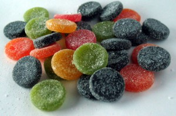

Joulu tuli ja–no, meni. Vielä kinkusta ähkynä on hyvä tutkia saatuja vekottimia hyvin syväluotaavasti. Onneksi en saanut sen vaarallisempia laitoksia tänä vuonna.
Aloitetaan kuitenkin kevyesti makeissuosituksilla. Makuasioitahan nämä, mutta tässä kolme suosikkiani:
{kind=link}
- Fazer Pantteri Mix (kuvassa oikealla) on minusta eräänlainen hillityn ja aistikkaan makumaailman kruunu. Se tuntuu ajattomalta. Ja tarkoitan nimenomaan tätä, missä on salmiakin lisäksi kolmea (+1) väriesanssia. Tämä pyhä kokonaisuus on niin yksinkertaisen toimiva, että harvoin tarvitsee muuta toivoakaan kaupassa.
- Fazer Aarrearkku (kuva linkin takana) on toinen hyvä, ja käytettävämpi kuin Pantteri, koska ylimääräistä sokeria ei ole ylt'ympäriinsä. Makuskaala on kovasti hedelmäesanssipainotteisempi, mutta mukana on toki vähän salmiakkia. Myös nämä raitalakut, mitä ovatkaan, ovat hyviä. Käteviä ja maistuvia. Yksi tämmöinen meni YO-kirjoituksissa.
- Marabou Twist on suklaanhimoisille lähes täydellinen paketti erilaisia laatuja. Suklaasta tulee kamala morkkis, joten en siksi pidä niitä niinkään yläarvoisina, mutta Twist kokoaa kaikenlaista mukavaa samaan kassiin: on Mars-kloonia, Tobleronea ja Daimia. Kokonaisuuteen on jostain ihmeen syystä ympätty myös yksi ei-suklainen elementti, joka oudoksuttaa kovasti. En pane pahakseni kuitenkaan.
Tilanteeni on huono sikäli, että en raaski omistani koskaan laittaa rahaan, ostaa esimerkiksi äitimuori vähän liian usein makeista. Ja toisaalta olen varsin perso nauttimaan pussin kuin pussin koneella löhötessä, kun se siinä äärellänsä kuitenkin on. Vaikka siitä seuraa vähintäänkin räjähtävän huono olo. Joihinkin oikein erityisokkasioihin saatan Pantterin (vaikka sitten pienen sellaisen) ostaa, mutta en tohtisi oikein muuten. Syytän muita; mitäs ostavat ja tarjoavat.
Philips GoGear Opus
Älkää ostako tätä laitosta. Sukulaiset ja tuttavat eivät aina tiedä/välitä lahjojensa linux-yhteensopivuudesta, eikä se ole niin iso homma. Mutta kun tämä laitos hädin tuskin toimii Windowsissakaan.
Sain 8-gigaisen mallin lahjaksi, ja olin toki vähän haltioissani sen tyylikkäästä ulkonäöstä (taustapuoli näyttää harjatulta alumiinilta. Eipä ole; kynnellä tekemäni kokeilu näkyy edelleen muovissa.) ja 8 gigan koosta. Siinähän olisi ainakin teoriassa hyvä kuljetella jopa kokonainen DVD-5 (ja ehkä kolmannes DVD-9:istä) jos ei musiikkia jaksa ahtaa täyteen. No, kuinkas siinä kävikään. Eihän se nyt tietenkään sovi markettitavaralle, että se käyttäisi standardia lisämuistiohjainta, vaan siellä on jos jonkinmoiset patentit taustalla.
Laite sanoo tukevansa MSC:tä (USB Mass Storage Driver tjsp), joten sen pitäisi periaatteessa toimia universaalisti missä vain. Mutta eipä tietenkään. Philips ei ole mikään nössö, joka noudattaisi standardeja, vaan pitää tehdä vaikean kautta kaikki. Tässä vähän laitteen levyjakoa. Windowsilla se näkyy jokseenkin oikein, mutta ei siis s-tana! Toinen vaihtoehto on MTP (Microsoft® Media Transport Protocol™) ja toimivuus on jokseenkin nollassa kaiken kanssa.
Onneksi havaitsin, että moni linux-ohjelma tukee MTP:tä. Harmikseni jouduin asentamaan sellaisia. Amarok on asentumassa. Käyttelin aikoinani Amarokkia, kuten moni muistaakin, mutta sen ohjelman pikkubugit ja soiton huonous sai minut kääntymään kevyemmän MPD:n pariin. Se vähän aikaa kirpaisi, mutta nyt on tuntunut jo pitkään mainiolta. Windows Media Player ei suurin surminkaan halua tukea Flac-muotoja (vaikka laite itse tukee, great!) joten joku Amarok pitää asentaa. Raportoin takaisin, kunhan se asentuu. Pahkeinen vaatii nykyisin jo ison MySQL-moottorin alleen, kun se aiemmin tyytyi tiedostopohjaiseen sqlite-kantaan, eikä tainnut tarvita sitäkään tiukassa paikassa. Muutenhan Amarok on ihan kiva ohjelma, mutta käyttöliittymä on mennyt susisurkeaksi uuden versiokulman kohdalla.
Päivitystä: laite ei halua suoralta kädeltä ottaa MTP-tukea vastaan. Opus kääntää protokollansa kättelyn jälkeen MSC:lle, mikä jo todettiin epätoimivaksi. Tämä tapahtuu silloin, kun lisään laitteen tuntomerkit (valmistajan ja tuotteen koodit) udevin sääntölistauksissa libmtp:n käsiteltäväksi. Ei nähtävästi libmtp hallitse tätä laitosta. Windowsissahan minun sitten pitää nämä aina käydä heittämässä. Siellä on niin vaivalloista tehdä mitään.
Vim
Niin, unohdinkin kertoa omasta joululahjastani: lahjoitin 15 euroa ICCF:lle, joka auttaa lapsia Ugandassa. Lahjani ei tietty ollut täysin pyyteetön, sillä samalla pääsen äänestämään Vimin kehityssuunnista. Eivät ne suunnat näytä kyllä mitään merkkaavan, mutta ajatus on tärkein.